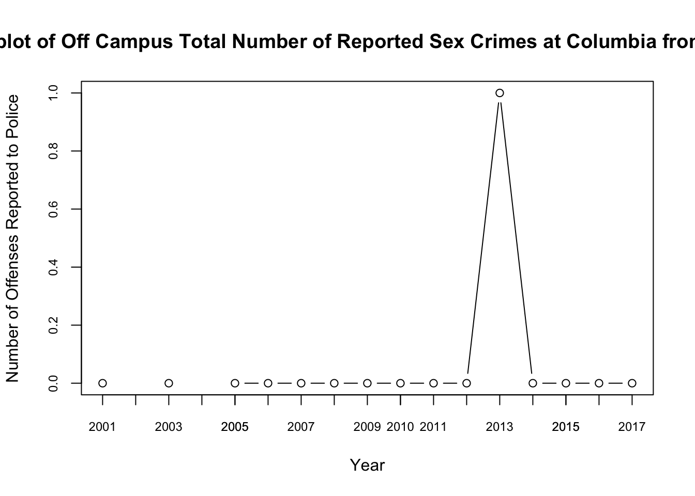

Assignments
This page will contain all the assignments you submit for the class.
Instructions for all assignments
I want you to submit your assignment as a PDF, so I can keep a record of what the code looked like that day. I also want you to include your answers on your personal GitHub website. This will be good practice for editing your website and it will help you produce something you can keep after the class is over.
Download the Assignment1.Rmd file from Canvas. You can use this as a template for writing your answers. It’s the same as what you can see on my website in the Assignments tab. Once we’re done with this I’ll edit the text on the website to include the solutions.
On RStudio, open a new R script in RStudio (File > New File > R Script). This is where you can test out your R code. You’ll write your R commands and draw plots here.
Once you have finalized your code, copy and paste your results into this template (Assignment 1.Rmd). For example, if you produced a plot as the solution to one of the problems, you can copy and paste the R code in R markdown by using the
``{r} ```command. Answer the questions in full sentences and Save.Produce a PDF file with your answers. To do this, knit to PDF (use Knit button at the top of RStudio), locate the PDF file in your docs folder (it’s in the same folder as the Rproj), and submit that on on Canvas in Assignment 1.
Build Website, go to GitHub desktop, commit and push. Now your solutions should be on your website as well.
Assignment 1
Collaborators: Rachael Villari, Michaela Reiser.
This assignment is due on Canvas on Monday 9/20 before class, at 10:15 am. Include the name of anyone with whom you collaborated at the top of the assignment.
Collaborators: Rachael Villari, Michaela Reiser
Problem 1
Install the datasets package on the console below using install.packages("datasets"). Now load the library.
library(datasets)Load the USArrests data set and rename it dat. Note that this dataset comes with R, in the package datasets, so there’s no need to load data from your computer. Why is it useful to rename the dataset?
Answer: It is useful to rename the dataset so we have a single, shorter variable to account for the whole dataset
dat <- USArrestsProblem 2
Use this command to make the state names into a new variable called State.
dat$state <- tolower(rownames(USArrests))This dataset has the state names as row names, so we just want to make them into a new variable. We also make them all lower case, because that will help us draw a map later - the map function requires the states to be lower case.
List the variables contained in the dataset USArrests.
Answer: Murder, Assault, Urban Population, Rape
names(dat)## [1] "Murder" "Assault" "UrbanPop" "Rape"Problem 3
What type of variable (from the DVB chapter) is Murder?
Answer: quantitative
What R Type of variable is it?
Answer: numeric
Problem 4
What information is contained in this dataset, in general? What do the numbers mean?
Answer: The numbers are the frequency of arrests per crime in each state and the urban population is the percentage of people in each state who live in an urban area. The information in general is the US Arrests of each crime in each state.
Problem 5
Draw a histogram of Murder with proper labels and title.
hist(dat$Murder, main = "Histogram of US Arrests
of Murder", xlab = "US Arrests of Murder",
xlim = c(0,20), ylim = c(0, 15))
Problem 6
Please summarize Murder quantitatively. What are its mean and median? What is the difference between mean and median? What is a quartile, and why do you think R gives you the 1st Qu. and 3rd Qu.?
Answer: Min: 0.8 Max:17.4 Mean:7.788 Median:7.250 Q1: 4.075 Q3: 11.250 The difference between mean and median is that the mean gives the average of all murders while the median relates to the value at the midpoint of the data set. R gives the 1st and 3rd quartiles so we can have a fuller picture of our dataset and we can have a better idea of where our median falls.
summary(dat$Murder)## Min. 1st Qu. Median Mean 3rd Qu. Max.
## 0.800 4.075 7.250 7.788 11.250 17.400Problem 7
Repeat the same steps you followed for Murder, for the variables Assault and Rape. Now plot all three histograms together. You can do this by using the command par(mfrow=c(3,1)) and then plotting each of the three.
hist(dat$Assault, main = "Histogram of US Arrests of Assault",
xlab = "US Arrests of Assault",xlim = c(0,350),
ylim = c(0,15))
hist(dat$UrbanPop, main = "Histogram of US Urban Population",
xlab = "US Urban Population", xlim = c(0,100),
ylim = c(0,15))
hist(dat$Rape, main = "Histogram of US Arrests of Rape",
xlab = "US Arrests of Rape", xlim = c(0,50),
ylim = c(0,15))
par(mfrow=c(3,1))
hist(dat$Assault, main = "Histogram of US Arrests of Assault",
xlab = "US Arrests of Assault", xlim = c(0,350),
ylim = c(0,15))
hist(dat$UrbanPop, main = "Histogram of US Urban Population",
xlab = "US Urban Population", xlim = c(0,100),
ylim = c(0,15))
hist(dat$Rape, main = "Histogram of US Arrests of Rape",
xlab = "US Arrests of Rape", xlim = c(0,50),
ylim = c(0,15))
What does the command par do, in your own words (you can look this up by asking R ?par)?
Answer: command par allows one to see all three graphs together in order to compare them more easily
What can you learn from plotting the histograms together?
Answer: You can learn the distributions against each other and see which variable has the most uniform or skewed distribution.
Problem 8
In the console below (not in text), type install.packages("maps") and press Enter, and then type install.packages("ggplot2") and press Enter. This will install the packages so you can load the libraries.
Run this code:
install.packages("maps")
install.packages("ggplot2")
library('maps')
library('ggplot2')
ggplot(dat, aes(map_id=state, fill=Murder)) +
geom_map(map=map_data("state")) +
expand_limits(x=map_data("state")$long, y=map_data("state")$lat)What does this code do? Explain what each line is doing.
Answer: The first two lines of code are installing the packages onto R so we can use the functions located within the package. Calling the library of maps and ggplot2 allows us to access these two functions within our own R Script. Lines 167-169 are plotting our USArrests data located in the variable dat, specifically the variable of “Murder.” It maps the data by U.S state of the different concentrations of murder arrests.
\[\\[2in]\]
Assignment 2
###Problem 1: Load Data
dat.nsduh <- read.csv("dat.nsduh.small.1.csv")What are the dimensions of the datset?
dim(dat.nsduh)## [1] 171 7Answer: 171 rows and 7 columns
###Problem 2: Variables
Describe the variables in the dataset
Answer: Answer: Variable names are “mjage,” “cigage,” “iralcage,” age2," “sexatract,” “speakengl,” and “irsex.” mj, alc, and age are quantitative variables while the others are categorical coded as an integer. mjage = the age that the individual first used marijuana, cigeage = the age that the individual first had a cigarette, iralcage = age to first drink alcohol, age2 = recoded age, sexatract = sexual attraction, speakengl = how well does one speak english, irsex = gender
names(dat.nsduh)## [1] "mjage" "cigage" "iralcage" "age2" "sexatract" "speakengl"
## [7] "irsex"summary(dat.nsduh)## mjage cigage iralcage age2
## Min. : 7.00 Min. :10.00 Min. : 5.00 Min. : 4.00
## 1st Qu.:14.00 1st Qu.:15.00 1st Qu.:13.00 1st Qu.:13.00
## Median :16.00 Median :17.00 Median :15.00 Median :15.00
## Mean :15.99 Mean :17.65 Mean :14.95 Mean :13.98
## 3rd Qu.:17.50 3rd Qu.:19.00 3rd Qu.:17.00 3rd Qu.:15.00
## Max. :35.00 Max. :50.00 Max. :23.00 Max. :17.00
## sexatract speakengl irsex
## Min. : 1.00 Min. :1.00 Min. :1.000
## 1st Qu.: 1.00 1st Qu.:1.00 1st Qu.:1.000
## Median : 1.00 Median :1.00 Median :1.000
## Mean : 3.07 Mean :1.07 Mean :1.468
## 3rd Qu.: 1.00 3rd Qu.:1.00 3rd Qu.:2.000
## Max. :99.00 Max. :3.00 Max. :2.000What is this dataset about? Who collected the data, what kind of sample is it, and what was the purpose of generating the data?
Answer: This is data from the National Survey on Drug Use and Health, about the drug use, alcohol use, cigarette use, and demographics of a random sample taken from all 50 states
the purpose of generating the data is to track levels of substance use and identify the groups that are the main users
###Problem 3: Age and gender
What is the age distribution of the sample like? Make sure you read the codebook to know what the variable values mean.
hist(dat.nsduh$age2)summary(dat.nsduh$age2)## Min. 1st Qu. Median Mean 3rd Qu. Max.
## 4.00 13.00 15.00 13.98 15.00 17.00Answer: the age distribution has a left skew. The mean is 13.98, median is 15, First quartile is 13 and the third quartile is 15 with a min of 4 and max of 17. This means that the average age of the sample is between 26 and 29 years old, the minimum is around 15 years of age, and the max is around 65+ years
Do you think this age distribution representative of the US population? Why or why not?
Answer:No I do not think this age distribution is representative of the U.S population because the distribution is skewed, a true representation would be closer to a uniform distribution
Is the sample balanced in terms of gender? If not, are there more females or males?
hist(dat.nsduh$irsex)Answer: the sample contains slightly more males than females
Use this code to draw a stacked bar plot to view the relationship between sex and age. What can you conclude from this plot?
tab.agesex <- table(dat.nsduh$irsex, dat.nsduh$age2)
barplot(tab.agesex,
main = "Stacked barchart",
xlab = "Age category", ylab = "Frequency",
legend.text = rownames(tab.agesex),
beside = FALSE) # Stacked bars (default)
Answer: One can conclude that the majority of individuals lie within the 13-15 age category. The younger age categories are mainly male dominated. This is a left skewed distribution where most of the data is in the higher age categories
###Problem 4: Substance use
par(mfrow=c(3,1))
hist(dat.nsduh$cigage, main = "Age of First Cigarette",xlab = "Age")
hist(dat.nsduh$mjage, main = "Age of First Marijuana Use", xlab = "Age")
hist(dat.nsduh$iralcage, main = "Age of First Drink", xlab = "Age")For which of the three substances included in the dataset (marijuana, alcohol, and cigarettes) do individuals tend to use the substance earlier?
Answer: Alcohol is the substance that individuals tend to use earlier
###Problem 5: Sexual attraction
What does the distribution of sexual attraction look like? Is this what you expected?
dat.nsduh$sexatract[dat.nsduh$sexatract == 99] <- NA
hist(dat.nsduh$sexatract, main = "Sexual Attraction", xlab = "Sexual Attraction")Answer: yes this is what one would expect because the majority of the U.S Population is heterosexual
What is the distribution of sexual attraction by gender?
par(mar=c(1,1,1,1))
tab.gendersexatract <- table(dat.nsduh$irsex, dat.nsduh$sexatract)
barplot(tab.gendersexatract,
main = "Relationship of Sexual Attraction and Gender",
xlab = "Sexual Attraction", ylab = "Frequency",
legend.text = rownames(tab.gendersexatract),
beside = FALSE) # Stacked bars (default)Answer: The stacked bar plot shows a right skew where the majority of individuals are purely heterosexual. The majority of men self report as heterosexual while there is marginally more balance in women between hetersexuality and being mostly attracted to the opposite gender (2).
###Problem 6: English speaking
What does the distribution of English speaking look like in the sample? Is this what you might expect for a random sample of the US population?
hist(dat.nsduh$speakengl, main = "English Speaking", xlab = "English Speaking")Answer: The majority of individuals can speak English very well while the minority report speaking it well or not well. This is representative of the U.S
Are there more English speaker females or males?
tab.genderspeakengl <- table(dat.nsduh$irsex, dat.nsduh$speakengl)
barplot(tab.genderspeakengl,
main = "Relationship of Gender and English Fluency",
xlab = "English fluency", ylab = "Frequency",
legend.text = rownames(tab.genderspeakengl),
beside = FALSE) # Stacked bars (default)Answer: there are more English speaking males
Assignment 3
Collaborators: .
This assignment is due on Canvas on Wednesday 10/27/2021 before class, at 10:15 am. Include the name of anyone with whom you collaborated at the top of the assignment.
Submit your responses as either an HTML file or a PDF file on Canvas. Also, please upload it to your website.
Save the file (found on Canvas) crime_simple.txt to the same folder as this file (your Rmd file for Assignment 3).
Load the data.
library(readr)
library(knitr)
dat.crime <- read_delim("crime_simple.txt", delim = "\t")This is a dataset from a textbook by Brian S. Everitt about crime in the US in 1960. The data originate from the Uniform Crime Report of the FBI and other government sources. The data for 47 states of the USA are given.
Here is the codebook:
R: Crime rate: # of offenses reported to police per million population
Age: The number of males of age 14-24 per 1000 population
S: Indicator variable for Southern states (0 = No, 1 = Yes)
Ed: Mean of years of schooling x 10 for persons of age 25 or older
Ex0: 1960 per capita expenditure on police by state and local government
Ex1: 1959 per capita expenditure on police by state and local government
LF: Labor force participation rate per 1000 civilian urban males age 14-24
M: The number of males per 1000 females
N: State population size in hundred thousands
NW: The number of non-whites per 1000 population
U1: Unemployment rate of urban males per 1000 of age 14-24
U2: Unemployment rate of urban males per 1000 of age 35-39
W: Median value of transferable goods and assets or family income in tens of $
X: The number of families per 1000 earning below 1/2 the median income
We are interested in checking whether the reported crime rate (# of offenses reported to police per million population) and the average education (mean number of years of schooling for persons of age 25 or older) are related.
- How many observations are there in the dataset? To what does each observation correspond?
names(dat.crime)## [1] "R" "Age" "S" "Ed" "Ex0" "Ex1" "LF" "M" "N" "NW" "U1" "U2"
## [13] "W" "X"R corresponds to the crime rate. Age corresponds to the number of males of age 14-24 per 1000 population.S is the ndicator variable for Southern states where 0 = No and 1 = Yes. Ed is the mean of years of schooling x 10 for persons of age 25 or older. Ex0 is the 1960 per capita expenditure on police by state and local government. Ex1 is the 1959 per capita expenditure on police by state and local government. LF is the labor force participation rate per 1000 civilian urban males age 14-24. M is the number of males per 1000 females. N is the state population size in hundred thousands.NW is the number of non-whites per 1000 population.U1 is the unemployment rate of urban males per 1000 of age 14-24. U2 is the unemployment rate of urban males per 1000 of age 35-39. W is the median value of transferable goods and assets or family income in tens of $. Finally, X is the number of families per 1000 earning below 1/2 the median income
- Draw a scatterplot of the two variables. Calculate the correlation between the two variables. Can you come up with an explanation for this relationship?
plot(dat.crime$Ed, dat.crime$R, main = "Relationship between
Education Level and Crime Reporting", ylab = "# of offenses
reported per mil", xlab = "Mean of years of schooling x 10
for persons of age 25 or older",xlim = c(80, 130), ylim
= c(0, 200))cor(dat.crime$Ed, dat.crime$R)## [1] 0.3228349There is a correlation of 0.32 between Education level and Crime reporting. This suggests that there is a positive relationship between the two variables. This could be because as one becomes more educated, one becomes more aware of what is illegal and wants to work toward crime reduction and making their surroudning space safer.
- Regress reported crime rate (y) on average education (x) and call this linear model crime.lm and write the summary of the regression by using this code, which makes it look a little nicer
# Remember to remove eval=FALSE above!
dat.crime$Ed.c = scale(dat.crime$Ed, center=TRUE, scale=FALSE)
crime.lm <- lm(formula = R ~ Ed, data = dat.crime)
summary(crime.lm)##
## Call:
## lm(formula = R ~ Ed, data = dat.crime)
##
## Residuals:
## Min 1Q Median 3Q Max
## -60.061 -27.125 -4.654 17.133 91.646
##
## Coefficients:
## Estimate Std. Error t value Pr(>|t|)
## (Intercept) -27.3967 51.8104 -0.529 0.5996
## Ed 1.1161 0.4878 2.288 0.0269 *
## ---
## Signif. codes: 0 '***' 0.001 '**' 0.01 '*' 0.05 '.' 0.1 ' ' 1
##
## Residual standard error: 37.01 on 45 degrees of freedom
## Multiple R-squared: 0.1042, Adjusted R-squared: 0.08432
## F-statistic: 5.236 on 1 and 45 DF, p-value: 0.02688kable(summary(crime.lm)$coef, digits = 2)| Estimate | Std. Error | t value | Pr(>|t|) | |
|---|---|---|---|---|
| (Intercept) | -27.40 | 51.81 | -0.53 | 0.60 |
| Ed | 1.12 | 0.49 | 2.29 | 0.03 |
- Are the four assumptions of linear regression satisfied? To answer this, draw the relevant plots. (Write a maximum of one sentence per assumption.)
plot(dat.crime$Ed.c, crime.lm$residuals, ylim=c(-100,100),
main="Residuals vs. x", xlab="x, Scaled Crime Reporting
Rate", ylab="Residuals")
abline(h = 0, lty="dashed")plot(crime.lm, which=1)
plot(crime.lm, which=2)
1. The Residuals versus Fitted plot shows no nonlinear trend as proved by the approximately flat red line fitting the linearity assumption. The independence assumption is met as shown by the residuals vs. x plot as there is no pattern of residuals shown. The homoscedasticity assumption is met as shown by the scatterplot in problem 2 as the points are random, but do not have any serious outliers. The normal population assumption is mostly met but could be argued that the right tail of the distribution is smaller than usual for a normal distribution.
- Is the relationship between reported crime and average education statistically significant? Report the estimated coefficient of the slope, the standard error, and the p-value. What does it mean for the relationship to be statistically significant?
Yes, the relationship between crime reporting and average education is statistically significant. The coefficient of the slope is 1.12, the standard error is 0.49, and the p-value is 0.03. The relationship being statistically significant is shown through the p-value being less than the alpha value of 0.05. It means that the results are not due to chance rather correlated to the relationship between the two studied variables.
- How are reported crime and average education related? In other words, for every unit increase in average education, how does reported crime rate change (per million) per state?
Reported crime and average education are related in that for every unit increase in education, reported crime rate increases by 1.12 units per million per state.
- Can you conclude that if individuals were to receive more education, then crime will be reported more often? Why or why not?
Yes, this can be concluded do to the statistical significance of education level and crime reporting in being compared to each other through linear regression. Along with the positive correlation of the scatterplot and all of the assumptions being met, there is a relationship between getting an education and being more likely to report crime.
Assignment 4
loading the library of tidyverse where the tidyverse package is stored to access
ggplot
library(tidyverse) #### installing the package so one can reload it after every session
install.packages(“tidyverse”)
calling mpg dataframe A data frame is a rectangular collection of variables
(in the columns) and observations (in the rows). mpg contains observations collected
by the US Environmental Protection Agency on 38 models of car.
mpg
#> # A tibble: 234 x 11 #> manufacturer model displ year cyl trans drv cty hwy fl class #>
mapping a gg scatterplot that maps car’s engine size against fuel efficiency
shows a negative relationship between x and y variables
ggplot(data = mpg) + geom_point(mapping = aes(x = displ, y = hwy))
#creating a reusable template for making graphs with ggplot2 ggplot(data = ) +
mapping aesthetics in your plot to the variables in the dataset, maps class to
color aesthetic
ggplot(data = mpg) + geom_point(mapping = aes(x = displ, y = hwy, color = class))
mapping class against size aesthetic
ggplot(data = mpg) + geom_point(mapping = aes(x = displ, y = hwy, size = class)) #### > Warning: Using size for a discrete variable is not advised.
mapping class to the alpha aesthetic, which controls the transparency of the points,
or to the shape aesthetic, which controls the shape of the points
Left
ggplot(data = mpg) + geom_point(mapping = aes(x = displ, y = hwy, alpha = class))
Right
ggplot(data = mpg) + geom_point(mapping = aes(x = displ, y = hwy, shape = class))
setting aesthetic properties of geom manually, making all of the points blue
ggplot(data = mpg) + geom_point(mapping = aes(x = displ, y = hwy), color = “blue”)
missed parentheses so the point do not come out blue
ggplot(data = mpg) + geom_point(mapping = aes(x = displ, y = hwy, color = “blue”))
plus sign must come at the end of the line not the beginning
ggplot(data = mpg) + geom_point(mapping = aes(x = displ, y = hwy))
facetting plot by a single variable. First argument is a formula, followed by ~
followed by variable name where formula is the name of a data structure in R/ The variable that
is passed to facet_wrap should be discrete
ggplot(data = mpg) + geom_point(mapping = aes(x = displ, y = hwy)) + facet_wrap(~ class, nrow = 2)
Facetting your plot on the combination of two variables, add facet_grid() to your
plot call. The first argument of facet_grid() is also a formula. This time the
formula should contain two variable names separated by a ~. The empty grids
show that there is no data attributed to this specific variable
ggplot(data = mpg) + geom_point(mapping = aes(x = displ, y = hwy)) + facet_grid(drv ~ cyl)
Code creates 4 facet columns that are generated by the “.” The data maps
engine size against fuel efficiency
ggplot(data = mpg) + geom_point(mapping = aes(x = displ, y = hwy)) + facet_grid(drv ~ .)
ggplot(data = mpg) + geom_point(mapping = aes(x = displ, y = hwy)) + facet_grid(. ~ cyl)
facets columns and rows of each type of car variable, engine size against fuel
efficiency
ggplot(data = mpg) + geom_point(mapping = aes(x = displ, y = hwy)) + facet_wrap(~ class, nrow = 2)
point geom representation of the data
left
ggplot(data = mpg) + geom_point(mapping = aes(x = displ, y = hwy))
right smooth geom representation of the data
ggplot(data = mpg) + geom_smooth(mapping = aes(x = displ, y = hwy))
drawing a different line, with a different linetype, for each unique value of
the variable that you map to linetype.
ggplot(data = mpg) + geom_smooth(mapping = aes(x = displ, y = hwy, linetype = drv))
geom smooth uses a single geometric object to display multiple rows of data.
Setting the group aesthetic to a categorical variable to draw multiple objects.
ggplot2 draws a separate object for each unique value of the grouping variable.
In practice, ggplot2 will automatically group the data for these geoms whenever you
map an aesthetic to a discrete variable (linetype example)
ggplot(data = mpg) + geom_smooth(mapping = aes(x = displ, y = hwy))
ggplot(data = mpg) + geom_smooth(mapping = aes(x = displ, y = hwy, group = drv))
ggplot(data = mpg) + geom_smooth( mapping = aes(x = displ, y = hwy, color = drv), show.legend = FALSE )
displaying multiple geoms in the same plot by adding multiple geom functions to
ggplot
ggplot(data = mpg) + geom_point(mapping = aes(x = displ, y = hwy)) + geom_smooth(mapping = aes(x = displ, y = hwy))
Avoiding duplication of variables by passing a set of mappings to ggplot()
ggplot(data = mpg, mapping = aes(x = displ, y = hwy)) + geom_point() + geom_smooth()
Placing mappings in a geom function, ggplot2 treats them as local
mappings for the layer. Uses these mappings to extend or overwrite the
global mappings for that layer only. This makes it possible to display different
aesthetics in different layers.
ggplot(data = mpg, mapping = aes(x = displ, y = hwy)) + geom_point(mapping = aes(color = class)) + geom_smooth()
smooth line displays just a subset of the mpg dataset, the subcompact cars.
local data argument in geom_smooth() overrides the global data argument in
ggplot() for that layer only.
ggplot(data = mpg, mapping = aes(x = displ, y = hwy)) + geom_point(mapping = aes(color = class)) + geom_smooth(data = filter(mpg, class == “subcompact”), se = FALSE)
Point plot with smooth line mapping separated by color
ggplot(data = mpg, mapping = aes(x = displ, y = hwy, color = drv)) + geom_point() + geom_smooth(se = FALSE)
Same graph by avoiding duplication of variables by passing in the mapping function
ggplot(data = mpg, mapping = aes(x = displ, y = hwy)) + geom_point() + geom_smooth()
ggplot() + geom_point(data = mpg, mapping = aes(x = displ, y = hwy)) + geom_smooth(data = mpg, mapping = aes(x = displ, y = hwy))
generates bar plot of the diamonds dataset showing that more diamonds are
available with high quality cuts than with low quality cuts
ggplot(data = diamonds) + geom_bar(mapping = aes(x = cut))
Using geoms and stats interchangeably. You can
recreate the previous plot using stat_count() instead of geom_bar()
ggplot(data = diamonds) + stat_count(mapping = aes(x = cut))
Overriding the default stat. change the stat of geom_bar() from count
(the default) to identity. Lets one map the height of the bars to the raw
values of a y variable
demo <- tribble( ~cut, ~freq, “Fair”, 1610, “Good”, 4906, “Very Good”, 12082, “Premium”, 13791, “Ideal”, 21551 )
ggplot(data = demo) + geom_bar(mapping = aes(x = cut, y = freq), stat = “identity”)
displaying a bar chart of proportion rather than count
ggplot(data = diamonds) + geom_bar(mapping = aes(x = cut, y = stat(prop), group = 1))
summarises the y values for each unique x value, to draw attention to
the summary that you’re computing
ggplot(data = diamonds) + stat_summary( mapping = aes(x = cut, y = depth), fun.min = min, fun.max = max, fun = median )
creates proportion bar chart that is color coordinated where proportion is = 1
because proportions cannot exceed 100%
ggplot(data = diamonds) + geom_bar(mapping = aes(x = cut, y = after_stat(prop))) ggplot(data = diamonds) + geom_bar(mapping = aes(x = cut, fill = color, y = after_stat(prop)))
Coloring bars using function colour and fill
ggplot(data = diamonds) + geom_bar(mapping = aes(x = cut, colour = cut)) ggplot(data = diamonds) + geom_bar(mapping = aes(x = cut, fill = cut))
map the fill aesthetic to another variable, like clarity: the bars are
automatically stacked. Each colored rectangle represents a combination of cut
and clarity
ggplot(data = diamonds) + geom_bar(mapping = aes(x = cut, fill = clarity))
position = “identity” will place each object exactly where it falls in the
context of the graph. Makes them transparent for easier viewing
ggplot(data = diamonds, mapping = aes(x = cut, fill = clarity)) + geom_bar(alpha = 1/5, position = “identity”) ggplot(data = diamonds, mapping = aes(x = cut, colour = clarity)) + geom_bar(fill = NA, position = “identity”)
position = “fill” works like stacking, but makes each set of stacked bars the
same height.
ggplot(data = diamonds) + geom_bar(mapping = aes(x = cut, fill = clarity), position = “fill”)
position = “dodge” places overlapping objects directly beside one another.
ggplot(data = diamonds) + geom_bar(mapping = aes(x = cut, fill = clarity), position = “dodge”)
position = “jitter” adds a small amount of random noise to each point. This
spreads the points out because no two points are likely to receive the same
amount of random noise.
ggplot(data = mpg) + geom_point(mapping = aes(x = displ, y = hwy), position = “jitter”)
point plot that does not include jittering to add random noise
ggplot(data = mpg, mapping = aes(x = cty, y = hwy)) + geom_point()
coord_flip() switches the x and y axes. This is useful (for example),
if you want horizontal boxplots
ggplot(data = mpg, mapping = aes(x = class, y = hwy)) + geom_boxplot() ggplot(data = mpg, mapping = aes(x = class, y = hwy)) + geom_boxplot() + coord_flip()
coord_quickmap() sets the aspect ratio correctly for maps.
nz <- map_data(“nz”)
ggplot(nz, aes(long, lat, group = group)) + geom_polygon(fill = “white”, colour = “black”)
ggplot(nz, aes(long, lat, group = group)) + geom_polygon(fill = “white”, colour = “black”) + coord_quickmap()
coord_polar() uses polar coordinates. Polar coordinates reveal an interesting
connection between a bar chart and a Coxcomb chart
bar <- ggplot(data = diamonds) + geom_bar( mapping = aes(x = cut, fill = cut), show.legend = FALSE, width = 1 ) + theme(aspect.ratio = 1) + labs(x = NULL, y = NULL)
bar + coord_flip() bar + coord_polar()
generates a regression line for the plot - shows that there is not a good
relationship between the two variables. Creates a point plot without randomness
ggplot(data = mpg, mapping = aes(x = cty, y = hwy)) + geom_point() + geom_abline() + coord_fixed()
adding add position adjustments, stats, coordinate systems, and faceting to our
code template:
#ggplot(data = ) + #mapping = aes(
library(tidyverse)
this line is loading the package ‘tidyverse’ which we already have installed
ggplot(mpg, aes(displ, hwy)) + geom_point(aes(color = class)) + geom_smooth(se = FALSE) + labs(title = “Fuel efficiency generally decreases with engine size”)
this section is making a scatterplot with the function geom_point and then
making a line of best fit using the geom_smooth function
this section also employs the labs function to make the label for the title of the graph
ggplot(mpg, aes(displ, hwy)) + geom_point(aes(color = class)) + geom_smooth(se = FALSE) + labs( title = “Fuel efficiency generally decreases with engine size”, subtitle = “Two seaters (sports cars) are an exception because of their light weight”, caption = “Data from fueleconomy.gov” )
Only difference from last section is that it uses the labs function to also add a subtitle and caption to the graph
ggplot(mpg, aes(displ, hwy)) + geom_point(aes(colour = class)) + geom_smooth(se = FALSE) + labs( x = “Engine displacement (L)”, y = “Highway fuel economy (mpg)”, colour = “Car type” )
Difference is that it uses x and y to define the axes labels and makes the legend label “car type”
df <- tibble( x = runif(10), y = runif(10) ) ggplot(df, aes(x, y)) + geom_point() + labs( x = quote(sum(x[i] ^ 2, i == 1, n)), y = quote(alpha + beta + frac(delta, theta)) )
this section is creating a data frame using the tibble function
it also uses mathematical functions in place of strings for the axes using the quote function
best_in_class <- mpg %>% group_by(class) %>% filter(row_number(desc(hwy)) == 1)
ggplot(mpg, aes(displ, hwy)) + geom_point(aes(colour = class)) + geom_text(aes(label = model), data = best_in_class)
pulls out the highest rated of each class, in this case the most efficient cars
ggplot(mpg, aes(displ, hwy)) + geom_point(aes(colour = class)) + geom_label(aes(label = model), data = best_in_class, nudge_y = 2, alpha = 0.5)
this section uses the geom_label function to draw a rectangle behind the text, with nudge_y moving the labels above the corresponding points
ggplot(mpg, aes(displ, hwy)) + geom_point(aes(colour = class)) + geom_point(size = 3, shape = 1, data = best_in_class) + ggrepel::geom_label_repel(aes(label = model), data = best_in_class)
Using the ggrepel package to automatically adjust labels so they don’t overlap
class_avg <- mpg %>% group_by(class) %>% summarise( displ = median(displ), hwy = median(hwy) )
ggplot(mpg, aes(displ, hwy, colour = class)) + ggrepel::geom_label_repel(aes(label = class), data = class_avg, size = 6, label.size = 0, segment.color = NA ) + geom_point() + theme(legend.position = “none”)
replacing the legend with labels on the plot
label <- mpg %>% summarise( displ = max(displ), hwy = max(hwy), label = “Increasing engine size is to decreasing fuel economy.” )
ggplot(mpg, aes(displ, hwy)) + geom_point() + geom_text(aes(label = label), data = label, vjust = “top”, hjust = “right”)
this section adds a single label to the plot by creating a new data frame
label <- tibble( displ = Inf, hwy = Inf, label = “Increasing engine size is to decreasing fuel economy.” )
ggplot(mpg, aes(displ, hwy)) + geom_point() + geom_text(aes(label = label), data = label, vjust = “top”, hjust = “right”)
#this section places the text we just created directly on the borders of the plot
“Increasing engine size is related to decreasing fuel economy.” %>% stringr::str_wrap(width = 40) %>% writeLines() “Increasing engine size is related to decreasing fuel economy.”
this section adds line breaks given the number of characters
ggplot(mpg, aes(displ, hwy)) + geom_point(aes(colour = class)) + scale_x_continuous() + scale_y_continuous() + scale_colour_discrete()
this section chooses scales that are not the default
ggplot(mpg, aes(displ, hwy)) + geom_point() + scale_y_continuous(breaks = seq(15, 40, by = 5))
this section uses the break function to override the default choice of axes ticks
ggplot(mpg, aes(displ, hwy)) + geom_point() + scale_x_continuous(labels = NULL) + scale_y_continuous(labels = NULL)
this section uses labels = NULL to get rid of the numeric tick labels on the axes
presidential %>% mutate(id = 33 + row_number()) %>% ggplot(aes(start, id)) + geom_point() + geom_segment(aes(xend = end, yend = id)) + scale_x_date(NULL, breaks = presidential$start, date_labels = “’%y”)
this section uses the breaks function to highlight the observations in the data set
base <- ggplot(mpg, aes(displ, hwy)) + geom_point(aes(colour = class))
base + theme(legend.position = “left”) base + theme(legend.position = “top”) base + theme(legend.position = “bottom”) base + theme(legend.position = “right”) # the default
controlling where the legend is drawn
ggplot(mpg, aes(displ, hwy)) + geom_point(aes(colour = class)) + geom_smooth(se = FALSE) + theme(legend.position = “bottom”) + guides(colour = guide_legend(nrow = 1, override.aes = list(size = 4)))
#geom_smooth() using method = ‘loess’ and formula ‘y ~ x’
uses nrow to control the number of rows and overrides the aesthetic using override.aes
ggplot(diamonds, aes(carat, price)) + geom_bin2d()
ggplot(diamonds, aes(log10(carat), log10(price))) + geom_bin2d()
log transforms the data to make it easier to see the precise relationship
ggplot(diamonds, aes(carat, price)) + geom_bin2d() + scale_x_log10() + scale_y_log10()
we use this to get rid of the log axes labels and rescale the axes
ggplot(mpg, aes(displ, hwy)) + geom_point(aes(color = drv))
ggplot(mpg, aes(displ, hwy)) + geom_point(aes(color = drv)) + scale_colour_brewer(palette = “Set1”)
adjusts the colors of the graph using the palette function
ggplot(mpg, aes(displ, hwy)) + geom_point(aes(color = drv, shape = drv)) + scale_colour_brewer(palette = “Set1”)
adds a shape mapping using the shape function
presidential %>% mutate(id = 33 + row_number()) %>% ggplot(aes(start, id, colour = party)) + geom_point() + geom_segment(aes(xend = end, yend = id)) + scale_colour_manual(values = c(Republican = “red”, Democratic = “blue”))
this section sets the colors of the data set to match the standard mapping of party with colour = party
df <- tibble( x = rnorm(10000), y = rnorm(10000) ) ggplot(df, aes(x, y)) + geom_hex() + coord_fixed()
ggplot(df, aes(x, y)) + geom_hex() + viridis::scale_fill_viridis() + coord_fixed()
employs a colour scheme that uses continous colors
ggplot(mpg, mapping = aes(displ, hwy)) + geom_point(aes(color = class)) + geom_smooth() + coord_cartesian(xlim = c(5, 7), ylim = c(10, 30))
mpg %>% filter(displ >= 5, displ <= 7, hwy >= 10, hwy <= 30) %>% ggplot(aes(displ, hwy)) + geom_point(aes(color = class)) + geom_smooth()
this section uses coord_cartesian to zoom in on a specific region of the plot
suv <- mpg %>% filter(class == “suv”) compact <- mpg %>% filter(class == “compact”)
ggplot(suv, aes(displ, hwy, colour = drv)) + geom_point()
ggplot(compact, aes(displ, hwy, colour = drv)) + geom_point()
this section subsets the data
x_scale <- scale_x_continuous(limits = range(mpg\(displ)) y_scale <- scale_y_continuous(limits = range(mpg\)hwy)) col_scale <- scale_colour_discrete(limits = unique(mpg$drv))
ggplot(suv, aes(displ, hwy, colour = drv)) + geom_point() + x_scale + y_scale + col_scale
ggplot(compact, aes(displ, hwy, colour = drv)) + geom_point() + x_scale + y_scale + col_scale
uses theme_bw to change the theme of the blot
ggplot(mpg, aes(displ, hwy)) + geom_point()
creates a ggplot as we have been doing
ggsave(“my-plot.pdf”)
#Saving 7 x 4.33 in image #### uses the ggsave function to save our current plot as an image
Crim250 Final Project - Crime Distributions at Ivy League Institutions
Loading Data: Columbia, Yale, UPenn
dat.Columbia <- read.csv('jacobdkaplan.com_school_count_Columbia University in the City of New York.csv')
dat.Upenn <- read.csv('upenndata.csv')
dat.Yale <- read.csv('jacobdkaplan.com_school_count_Yale University.csv')1. INTRODUCTION
At the University level, it is important that crime trends are observed in relation to the external factors that may have an effect. Ivy League universities, being private institutions that receive billions of dollars in endowments, should have ample measures in place to control crime rates on campus to maintain the safety of students. In this report, we will observe the total crime trends between the University of Pennsylvania, Yale University, and Columbia University and then take a more specific look at sexual offense trends. These trends will be compared with external research that analyzes police funding and the implementation of Title IX. Ultimately, it is important that more causal research is conducted in this area to observe whether it is beneficial to have privately funded university police departments and whether to bolster Title IX power. The data used in this report contain the total crime data from 2001-2017 for the three Ivy League institutions mentioned above.
2. EXPLORATORY DATA ANALYSIS
2.1 Data Description
The selected dataset was compiled data from Jacob Kaplan on total crimes reported at Universities.1 All of the data comes from the Department of Education Office of Postsecondary Education, which collects crime data from colleges. The following variables were the focus of the analysis: total number of aggravated assault, total number of arson, total number of motor vehicle theft, total number of non-negligent manslaughter, total number of negligent manslaughter, total number of sex offenses. The variables total number of on campus sex crimes and total number of off campus sex crimes were explored as well. All datasets used for this analysis individually contain 17 years of data with 1039 observations.
dim(dat.Columbia)## [1] 17 1039dim(dat.Yale)## [1] 17 1039dim(dat.Upenn)## [1] 17 10392.2 MISSING VALUES
There are many missing values because, different from the value of 0, there are crime “categories” that do not have any reported crime data for certain years. For example, looking at the University of Pennsylvania data, there is no data for off-campus rape crimes until 2014. This will affect our data analysis, because the crime statistics may seem lower than they actually are.
2.3 UNIVERSITY LOCATIONS
The three universities are located in urban settings. University of Pennsylvania is located in Philadelphia, PA (2019 pop. = 1.58 million).2 Columbia University is located in New York City, NY (2019 pop. = 8.33 million).2 Yale University is in New Haven, CT (2019 pop. = 130,250).2 All population data was retrieved from the US census population estimates.
2.4 CAMPUS POLICE FORCE
The University of Pennsylvania’s Division of Public Safety (DPS) comprises 180 personnel and 121 of these are sworn-in University of Pennsylvania police officers.3 The Yale Police Department (YPD) comprises 93 sworn-in police officers.4 Due to New York regulations, Columbia University has 147 full-time security officers and no sworn-in officers.5 These security officers cannot carry firearms or arrest individuals, but they can detain suspected criminals on the University property. However, Columbia University is in the 26th precinct of the NYPD.6 2.5 TOTAL CRIMES PER YEAR
plot(dat.Columbia$year, dat.Columbia$crimes_total_total, type = "b", main = "Scatterplot of Total Number of Reported Crimes at Columbia from 2001-2017",
xlab = "Year", ylab = "Number of offenses reported to police", cex.axis = 0.75)
axis(1, at=seq(2001,2017,1), cex.axis=0.75)
plot(dat.Yale$year, dat.Yale$crimes_total_total, type = "b", main = "Scatterplot of Total Number of Reported Crimes at Yale from 2001-2017",
xlab = "Year", ylab = "Number of offenses reported to police", cex.axis = 0.75)
axis(1, at=seq(2001,2017,1), cex.axis=0.75)plot(dat.Upenn$year, dat.Upenn$crimes_total_total, type = "b", main = "Scatterplot of Total Number of Reported Crimes at UPenn from 2001-2017",
xlab = "Year", ylab = "Number of offenses reported to police", cex.axis = 0.75)
axis(1, at=seq(2001,2017,1), cex.axis=0.75)2.6 AVERAGE OF TOTAL SEX OFFENSES PER YEAR
plot(dat.Columbia$year, dat.Columbia$crimes_total_sex_offenses_total, type = "b", main = "Scatterplot of Total Number of Reported Sex Crimes at Columbia from 2001-2017",
xlab = "Year", ylab = "Number of Offenses Reported to Police", cex.axis = 0.75)
axis(1, at=seq(2001,2017,1), cex.axis=0.75)plot(dat.Yale$year, dat.Yale$crimes_total_sex_offenses_total, type = "b", main = "Scatterplot of Total Number of Reported Sex Crimes at Yale from 2001-2017",
xlab = "Year", ylab = "Number of Offenses Reported to Police", cex.axis = 0.75)
axis(1, at=seq(2001,2017,1), cex.axis=0.75)
plot(dat.Upenn$year, dat.Upenn$crimes_total_sex_offenses_total, type = "b", main = "Scatterplot of Total Number of Reported Sex Crimes at Upenn from 2001-2017",
xlab = "Year", ylab = "Number of Offenses Reported to Police", cex.axis = 0.75)
axis(1, at=seq(2001,2017,1), cex.axis=0.75)2.7 DIFFERENCES BY ON/OFF CAMPUS
2.7.1 ON CAMPUS SEX OFFENSES
plot(dat.Columbia$year, dat.Columbia$crimes_on_campus_sex_offenses_total, type = "b", main = "Scatterplot of On Campus Total Number of Reported Sex Crimes at Columbia from 2001-2017",
xlab = "Year", ylab = "Number of Offenses Reported to Police", cex.axis = 0.75)
axis(1, at=seq(2001,2017,1), cex.axis=0.75)plot(dat.Yale$year, dat.Yale$crimes_on_campus_sex_offenses_total, type = "b", main = "Scatterplot of On Campus Total Number of Reported Sex Crimes at Yale from 2001-2017",
xlab = "Year", ylab = "Number of Offenses Reported to Police", cex.axis = 0.75)
axis(1, at=seq(2001,2017,1), cex.axis=0.75)plot(dat.Upenn$year, dat.Upenn$crimes_on_campus_sex_offenses_total, type = "b", main = "Scatterplot of On Campus Total Number of Reported Sex Crimes at UPenn from 2001-2017",
xlab = "Year", ylab = "Number of Offenses Reported to Police", cex.axis = 0.75)
axis(1, at=seq(2001,2017,1), cex.axis=0.75)
2.7.2 OFF CAMPUS SEX OFFENSES
plot(dat.Columbia$year, dat.Columbia$crimes_noncampus_sex_offenses_total, type = "b", main = "Scatterplot of Off Campus Total Number of Reported Sex Crimes at Columbia from 2001-2017",
xlab = "Year", ylab = "Number of Offenses Reported to Police", cex.axis = 0.75)
axis(1, at=seq(2001,2017,1), cex.axis=0.75)
plot(dat.Yale$year, dat.Yale$crimes_noncampus_sex_offenses_total, type = "b", main = "Scatterplot of Off Campus Total Number of Reported Sex Crimes at Yale from 2001-2017",
xlab = "Year", ylab = "Number of Offenses Reported to Police", cex.axis = 0.75)
axis(1, at=seq(2001,2017,1), cex.axis=0.75)plot(dat.Upenn$year, dat.Upenn$crimes_noncampus_sex_offenses_total, type = "b", main = "Scatterplot of Off Campus Total Number of Reported Sex Crimes at Upenn from 2001-2017",
xlab = "Year", ylab = "Number of Offenses Reported to Police", cex.axis = 0.75)
axis(1, at=seq(2001,2017,1), cex.axis=0.75)
2.8 DIFFERENCES IN DIFFERENT CRIME TYPES

Differences In Different Crime Types

Differences In Different Crime Types
# CAUSAL ANALYSIS
3.1 CAUSAL PARAMETER OF INTEREST
The causal parameters of interest are the size and funding of the police forces of the three Ivy League institutions: University of Pennsylvania, Yale University, and Columbia University. Additionally, we note the effect of Title IX guidelines on the sexual offense trends. While Columbia has 147 security officers rather than a private police force, Columbia benefits from the NYPD as they are located in the 26th precinct. Due to the size and power of the NYPD, Columbia’s total crime trend could be more reflective of the crime trends in the surrounding New York area. UPenn has a private police force of 121 sworn officers, which receives 27 million dollars of funding. UPenn’s negative crime trend could be a result of the robust size and funding of the police force, but without causal analysis and true experiments that include randomization, it is unclear whether this external factor has a relevant impact. Finally, on-campus sexual offense trends could be influenced by the causal parameter of Title IX guidelines and their implementation in university proceedings surrounding sexual offense cases. Title IX allows increased protections and assurance of investigation for on-campus students, which could possibly explain the high reporting rates for sexual offenses. Conversely, Title IX guidelines limit protections in off campus offenses noted in our discussion section.7
It is important to note that these causal parameters can only be hypothesized as we do not have sufficient data to analyze whether they play an influential role in our EDA of the crime distributions of the three Ivy Leagues explored. 3.2 PROPOSED CAUSAL DAG
The proposed causal DAG consists of two actions, the outcomes of the actions, and the confounding variables that may impact both the actions and the outcomes. In our case of understanding the crime distribution of the Columbia, Yale, and UPenn, the actions that influence the crime reporting rates are the strength and presence of the campus funded police force and Title IX when regarding the reporting of sex offenses. The expected outcomes of higher funding and strong on campus police force would seemingly decrease total crime rates whereas decreased funding and smaller police force would result in higher crime. Title IX’s on-campus guidelines would result in higher crime reporting of sex offenses due to increased victim protection whereas their off campus guidelines would result in decreased reporting. However, the confounding variables that may impact both these actions and outcomes are reporting bias, in that there may be failure to report by police offices as well as failure to report by victim (sex assault), and the danger of the location of the school.
Causal DAG
4. DISCUSSION
We wanted to determine whether 1) There was a significant difference in total crime rates and sexual offenses between three different urban, Ivy League institutions, and 2) if police size and funding, and Title IX guidelines influenced this relationship. Due to a lack of sufficient data on which we could perform linear regression to explore the correlation between these two actions (police funding and Title IX guidelines), it is unclear whether they have an impact on the total crime trends and sexual offense rates at any of the Ivy Leagues we analyzed. However, overall, we found that the University of Pennsylvania had the highest total number of reported crimes from 2001-2017, with a total of 2069 crimes compared to Yale (1991) and Columbia (1589). It is important to note that Columbia had two years of missing data, which could change how its crime rates actually compare to the other universities. Yale University had the highest number of reported sex offenses (246) compared to Columbia University (196) and University of Pennsylvania (216). We find this especially interesting because UPenn has the highest crime rate, despite having the largest number of on-campus sworn-in officers. Additionally, it is intriguing that Yale University is located in the smallest city (population =130,250) of the three schools analyzed, but still has the highest number of reported sex offenses. Yale University also has the lowest police force funding ($10 million), despite having the largest endowment ($42.3 billion) of the three Ivies.2,8,9 We also found that almost all sex offenses reported to the respective campus police forces occurred on campus, rather than off campus. It is possible that this is because off-campus sex offenses are reported to the city police forces. In terms of Title IX providing explanation for the stark difference between on campus and off campus sexual offense trends, new Title IX guidelines do not require universities to investigate events that occur off campus. Therefore, there could ultimately be higher off campus sexual offense trends due to lack of investigation by universities. Our results have some limitations. The Columbia University data set was missing crime data for 2002 and 2004. The data sets that we used were subject to reporting bias and missing data. Failure to report by police officers and failure to report by victim, which is especially prevalent with sexual assault cases, has an effect on the total number of crimes reported, as well as the total number of sexual offenses reported. In addition, due to limited data, we only used scatter and box plots to compare the crime distribution and analyze the relationship between police force funding, Title IX enactment, and crime distribution. The use of linear regression would allow for strong analysis between these variables.
5. Appendix

Appendix 3
6 Sources
Kaplan, J. (n.d.). Crimes On University Campuses. Data | Jacob Kaplan. Retrieved December 7, 2021, from https://jacobdkaplan.com/data.html. Bureau, U. S. C. (2021, October 8). American Community survey 5-year data (2009-2019). Census.gov. Retrieved December 7, 2021, from https://www.census.gov/data/developers/data-sets/acs-5year.html. Pennsylvania, U. of. (n.d.). About our division. Division of Public Safety. Retrieved December 7, 2021, from https://www.publicsafety.upenn.edu/about/. Yale University. (2020, June). Yale Police Department. It’s Your Yale. Retrieved December 7, 2021, from https://your.yale.edu/community/public-safety/yale-police-department. Heinzerling, K. (2017, October 8). With 120 officers, Penn has the largest private police force in Pennsylvania. The Daily Pennsylvanian. Retrieved December 7, 2021, from https://www.thedp.com/article/2017/10/with-120-officers-penn-has-the-largest-private-police-force-in-pennsylvania. 26th precinct. 26 Precinct - NYPD. (n.d.). Retrieved December 7, 2021, from https://www1.nyc.gov/site/nypd/bureaus/patrol/precincts/26th-precinct.page. Feldman, S. (2018, October 8). Yale and Title IX: A Complicated History and an Unclear Future. The Politic. Retrieved December 7, 2021, from https://thepolitic.org/yale-and-title-ix-a-complicated-history-and-an-unclear-future/.
Why: Black students for disarmament at Yale. bsdy. (n.d.). Retrieved December 7, 2021, from https://www.defundypd.com/why. Yale Investments Office. (n.d.). Retrieved December 07, 2021, from https://investments.yale.edu/